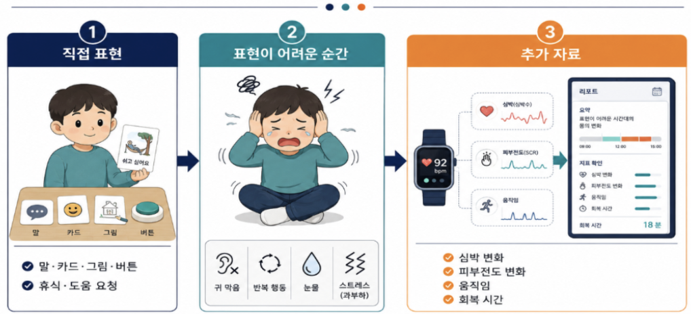
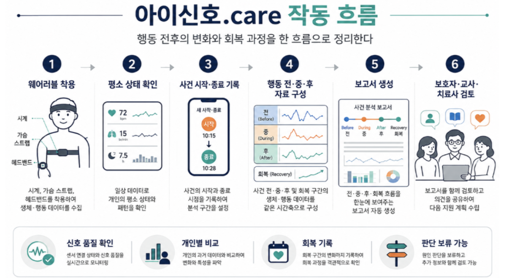

발달장애 지원 기관은 계속 늘고 있지만, 그렇다고 가정·학교·치료실에 같은 수준의 관찰 기록이 쌓이지는 않았습니다. 행동이 실제로 일어나는 일상에는 전문가가 늘 함께할 수 없고, 사는 지역에 따라 전문 지원을 받는 길도 다릅니다.
개요
웨어러블 생체신호로 ASD 아동의 행동 전후 변화를 기록해, 보호자·교사·치료사의 대응을 돕는 서비스
| 구분 | 담당 |
|---|---|
| 팀장 | 서비스 기획·개발 총괄 · 일정·기술 구조 |
| 배수빈 | 세부 기획 공동 정리 · 간호학 관점의 생체신호·건강 변수 검토 · 라벨링·품질 점검 · 기획서 작성과 근거자료 제작 |
| 팀원 | 움직임·가속도 데이터 분석 · DB 서빙 구조 |
문제
| 항목 | 현황 |
|---|---|
| 기관 품질 | 발달재활 평가기관 1,786곳 중 D·F 등급 270곳(15.1%) |
| 지역 공백 | 공공 전문기관 13개 병원·10개 시·도. 17개 시·도 중 7곳은 지정기관 없음 |
출처: 보건복지부·중앙사회서비스원 「2024 사회서비스 품질평가」 외
기록 단절
보호자·교사·치료사 모두 아이를 관찰하지만, 각자 본 것만 따로 남습니다. 기록이 사건 시각을 기준으로 이어지지 않아서 같은 행동도 사람마다 다르게 설명됩니다.
가정남는 기록
수면·식사·일상 반응
모르는 것학교·치료실에서 이어진 변화
학교남는 기록
과제·전환 상황, 행동 발생
모르는 것행동 전 작은 변화, 귀가 후 회복
치료실남는 기록
치료 중 반응, 짧은 상담 기록
모르는 것치료실 밖 사건과 대응
기획
해결 방향
말·카드·그림·버튼은 아이가 요구를 직접 전하는 통로입니다. 문제는 그 통로를 쓰지 못하는 순간이었습니다. 그때의 심박, 피부전도, 움직임 변화를 기록하면 표현의 빈자리를 채울 수 있다고 봤습니다.

전문가 부족이나 치료비 문제를 이 서비스가 직접 해결하지는 못합니다. 그래서 목표를 제한된 전문가가 더 나은 일상 자료로 상담하도록 돕는 것으로 좁혔습니다.
서비스 흐름

라벨 기준
라벨 기준에는 간호학에서 쓰는 수치 기준을 적용했습니다. 심전도 리듬, 혈압, 혈당 같은 기본 건강 수치를 정상·경계 구간으로 나눠 기준을 잡았고, 팀원이 리서치한 값을 “이 기준 맞아요?” 하고 물어 오면 임상 기준에 맞는지 확인했습니다.
기획 판단
01원인은 고르지 않고 사실만 기록
- 고민보호자가 “불안해서”처럼 원인을 골라 적으면 데이터가 추측으로 흐려집니다
- 정한 규칙원인 선택 없이 시작·종료 시각과 실제로 본 행동만 남기게 했습니다
- 결과물사건 기록 화면
02성능 수치보다 연결 먼저
- 고민짧은 기간에 모델 성능부터 올릴지, 기기 연결부터 잡을지 정해야 했습니다
- 정한 규칙실기기 신호와 사건 기록이 빠짐없이 이어지는지부터 증명하기로 했습니다
- 결과물신호 품질·배터리 관리 기능
03판정 대신 확인할 것 안내
- 고민보호자 화면에 예측 결과를 단정적으로 보여 주면 오해가 생길 수 있습니다
- 정한 규칙최근 변화와 확인할 항목(주변 환경·휴식·의사표현 수단)만 보여 주기로 했습니다
- 결과물보호자 가이드 화면
결과와 기대효과
6월 19일 기획을 시작해 7월 13일 참가 신청을 했고, 7월 22일 예선을 통과했습니다. 8월 10일 심사 과제를 제출했지만 8월 21일 본선 진출에는 실패했습니다.
| 대상 | 지금 | 기대효과 |
|---|---|---|
| 보호자 | 사건을 기억해 반복 설명하고 이유를 추정 | 시각·대응·회복이 정리돼 설명 부담이 줄어듦 |
| 교사 | 수업 중 사건을 짧게 기록해 전달 | 같은 항목으로 기록해 가정·치료실 전달이 쉬워짐 |
| 치료사 | 치료실 밖 사건을 사후 설명으로 파악 | 상담 전에 사건 흐름과 반복 조건을 확인 |
처음에는 기관·지자체와 무료 파일럿으로 착용성과 기록 품질을 확인하고, 이후 유료 운영으로 넓히는 순서로 계획했습니다.
Evidence
- 제8회 K-디지털 트레이닝 해커톤 공식 안내
- 아이디어 개발 기획서 (팀 내부 자료)